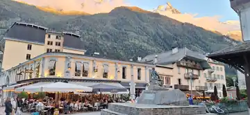
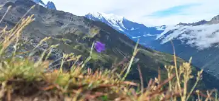
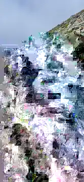
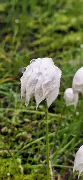

THE STORY BEHIND THE TRACK
CHAMONIX
2712
Some tracks start with a melody. This one started with a place.
Chamonix became a mix of evening light in the valley, a trail that slowly turned into rock, Mont Blanc in the distance and the tiny details you only notice when you stop climbing for a moment.
2712
FROM PLACE TO TRACK
Big landscape.
Small moments.
The contrast is what stayed: the scale of the mountains against details at your feet, the calm of the view against the effort of getting there, and a trip that was as much about the people as it was about the altitude.
That atmosphere became the foundation for CHAMONIX 2712 — a track built from movement, friendship, adrenaline and a mountain story worth keeping.
PHOTO JOURNAL · CHAMONIX
Four frames
from the story.
Optimized WebP photos — lightweight for the site, without loading the original camera files.




CHAMONIX 2712
One trip. Four frames. One track that had to exist.Explore Dorado Project